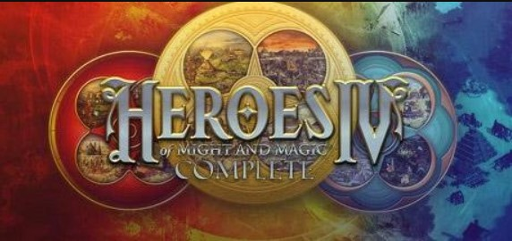

Heroes of Might and Magic 4: Complete
CLP $7.990
CLP $7.990
Algunas profecías de fatalidad se hacen realidad. Escapa de las llamas que te lamen la espalda y salta rápidamente a través de un portal a otro mundo, ya que solo los audaces podrán vivir. Abraza una tierra nueva y maravillosa y descubre sus antiguos misterios. Lucha contra sus criaturas mortales y explora un pasado olvidado. Aquí yacen dioses que han estado en silencio demasiado tiempo. Aquí yace un reino que solo pueden reclamar los fuertes, los astutos o los sabios. ¡Aquí yace un reino que espera a un audaz conquistador!